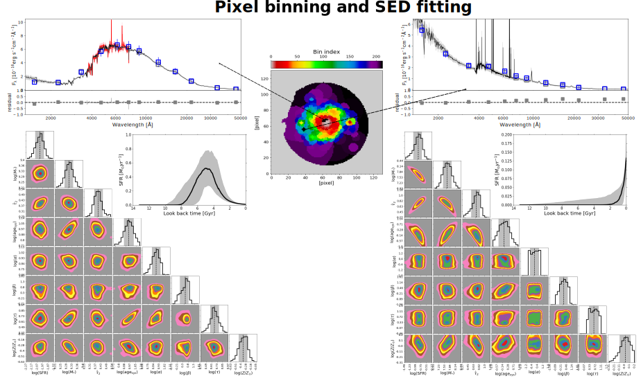
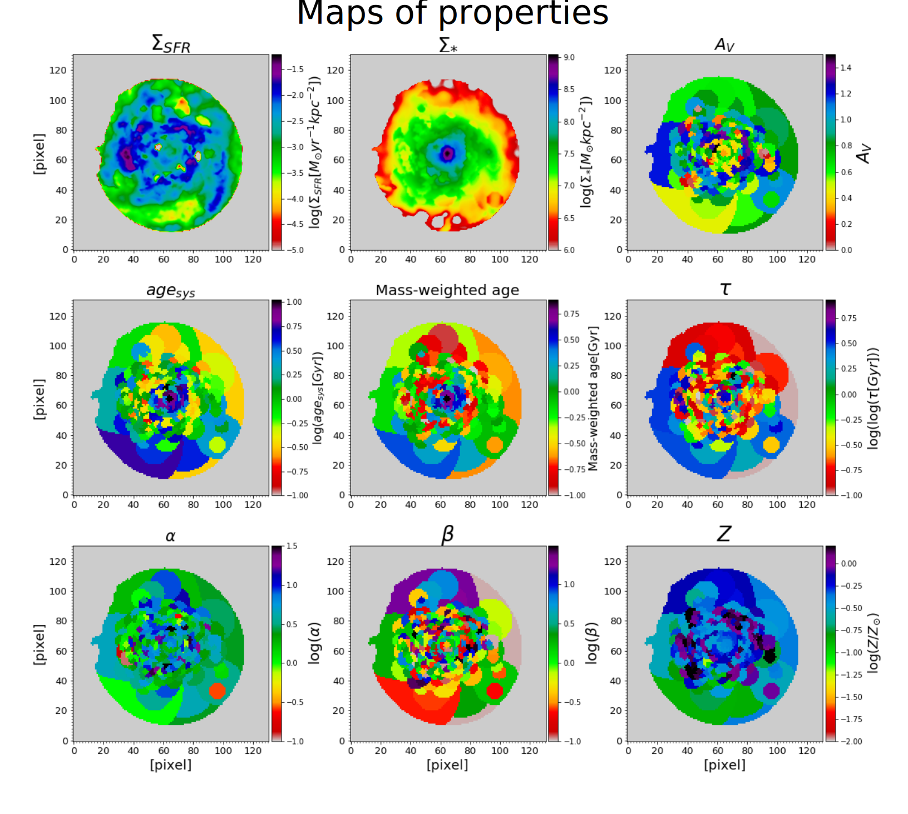
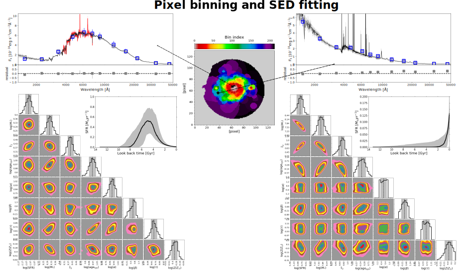
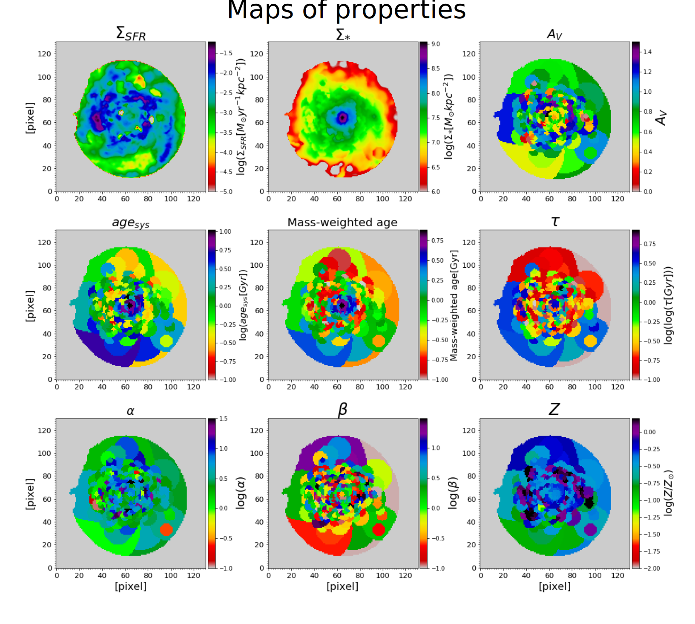

piXedfit¶
piXedfit, pixelized spectral energy distribution (SED) fitting, is a Python package that provides a self-contained set of tools for analyzing spatially resolved properties of galaxies using imaging data or a combination of imaging data and integral field spectroscopy (IFS) data. piXedfit has six modules which can handle all tasks in the analysis of spatially resolved SEDs of a galaxy, including images processing, a spatial-matching between reduced broad-band imaging data with IFS data, pixel binning, SED fitting, and producing visualization plots for the SED fitting results. piXedfit is a versatile tool that has been equipped with the multiprocessing module (namely message passing interface or MPI) for efficient analysis of the datasets of a large number of galaxies. Detailed description on piXedfit and its performance is presented in Abdurro’uf et al. (2021).
While this website is still under construction, people interested in knowing how piXedfit works can see some demonstrations in folder examples on the GitHub page or some animations here: images processing, pixel binning and SED fitting.
 

{kind=link}
Features¶
piXedfit has 6 modules that can work independent with each other. For instance, it is possible to use the SED fitting module for fitting any observed SED (either integrated of spaially resolved SED) without the need of using the images processing and pixel binning modules. The 6 modules and their capabilities are the following:
piXedfit_images: image processing
This module can be used for spatial-matching (in resolution and spatial sampling) of multiband imaging data ranging from far-ultraviolet (FUV) to far-infrared (FIR) (obtained from both the ground-based and spaced-based telescopes) and extract pixel-wise photometric SEDs within the galaxy’s region of interest.
piXedfit_spectrophotometric: spatial-matching of imaging data and the IFS data
This module can be used for spatial-matching (in spatial resolution and sampling) of a multiband imaging data (that have been processed by the
piXedfit_images) with an IFS data cube and extract pixel-wise spectrophotometric SEDs within the galaxy’s region of interest. For the current version of piXedfit, only the IFS data from the CALIFA and MaNGA can be analyzed by this module.piXedfit_bin: pixel binning
This module is capable of performing pixel binning, which is a process of combining neighboring pixels to achieve certain set of S/N thresholds. The pixel binning scheme takes into account of the similarity of SED shape among the pixels. This way important spatial information from pixel scale can still be preserved, while increasing the S/N of the spatially resolved SEDs. The S/N threshold can be set to every band in the multiband imaging data, not only to a particular band.
piXedfit_model: generating model SEDs
This module can generate model SEDs of galaxies given some parameters. The SED modeling uses the FSPS SPS model with the Python-FSPS as the interface to the Python environment. The SED modeling incorporates four main components in the galaxy’s SED: stellar emission, nebular emission, dust emission, and the AGN dusty torus emission.
piXedfit_fitting: performing SED fitting
This module is capable of performing SED fitting to input SED, including both spatially resolved SED and integrated SED of galaxies. The input can be in the form of photometric SED or spetrophotometric SED (i.e., combination of photometry and spectroscopy).
piXedfit_analysis: producing visualization plots for the SED fiting results
This module can make three plots for visualization of the fitting results: corner plot (i.e., plot showing 1D and 2D joint posteriors of the parameters space), SED plot, and SFH plot.
User guide
Tutorials
Reference¶
A list of a few projects piXedfit is benefited from:
FSPS and Python-FSPS stellar population synthesis model
emcee package for the Markov Chain Monte Carlo (MCMC) Ensemble sampler
Aniano et al. (2011) who provides convolution kernels for the PSF matching